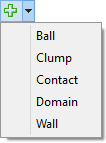

绘图项控制集

绘图项控制集是一个复合工具：其上部是绘图中的项列表。下部用于显示当前在上部选中的任何项或子项的属性。
大多数绘图项各自都包含一组“子项”，即：
可通过项名称旁的展开箭头（ ）访问并激活这些子项。它们用于修改（通常是取子集）项的显示。
控制集的下部（位于“属性”标签下）包含当前在上述列表中选中的任何项或子项可用的所有控件。控件随所选对象而变化——更改列表中选中的项（也可直接在绘图上操作）会更改“属性”部分显示的控件。属性说明随各绘图项提供，列于绘图项（Plot Items）一节中。
该控制集顶部的工具栏用于在绘图中添加或移除项、对绘图项应用过滤器、复制和粘贴项或其子项，以及为当前视图设置局部选项。使用绘图窗格工具栏（toolbar of the plot pane）上的选项按钮，可以为所有视图设置全局选项。
工具栏按钮
| 图标 | 命令 | 说明/注释 |
|---|---|---|
 |
调用 构建绘图 | 调用构建绘图对话框 |
| ▾ | 快速添加 | 显示用户定义的绘图项列表 |
| 添加范围元素 | 调用构建范围对话框 | |
| 删除 | 删除当前绘图项 | |
| 复制 | 复制当前选择 | |
| 粘贴 | 粘贴已复制的选择 | |
| 选项 | 指定当前绘图的设置 | |
 |
帮助 | 打开有关此主题的文档 |

快速添加菜单
按钮旁的箭头会打开“快速添加”菜单。从此菜单中选择的项会立即添加到绘图中，而不经过构建绘图对话框。此列表的内容与用户定义的绘图项列表相对应，可由用户设置（set by the user）。
复制与粘贴
复制（ ）和粘贴（ ）按钮可用于复制控制集上部中的项。可以复制绘图项或其子项之一（切割工具、裁剪框或范围）。要复制，请在列表中选择所需的绘图项或子项，然后按 或右键单击并选择。复制的项可按以下一组约束条件粘贴。
- 粘贴已复制的绘图项：按 按钮，或右键单击并选择“粘贴”（这要求右键单击的位置不是列表中的项）。将创建该绘图项及其所有子项的副本。
- 粘贴已复制的子项：首先，选择粘贴操作的目标。该目标既可以是另一个绘图项的名称，也可以是其同类子项（例如，若复制了绘图项 A 的“范围”，则可选择绘图项 B 的“范围”作为粘贴目标；若选中的是“切割工具”或“裁剪框”，则尝试粘贴所复制的“范围”将失败）。选中有效目标后，按 按钮，或右键单击该目标并选择“粘贴”。粘贴子项时，其所有设置都会转移到新的绘图项（必要时覆盖原有设置）。
注意
符合上述约束条件的复制/粘贴操作可以跨绘图进行。
绘图项列表控件
在控制集的上部，包含子项的项可以展开或折叠以显示子项（ 或 ）；有些项不包含子项。
对于绘图项，用  和 切换可见性的打开和关闭。对于子项，这些按钮会激活或取消激活子项的作用。默认情况下，切割工具和裁剪框处于取消激活状态。范围默认处于激活状态，但由于它们初始不包含任何范围元素，其激活对绘图项没有影响。
和 切换可见性的打开和关闭。对于子项，这些按钮会激活或取消激活子项的作用。默认情况下，切割工具和裁剪框处于取消激活状态。范围默认处于激活状态，但由于它们初始不包含任何范围元素，其激活对绘图项没有影响。
为将其与常规绘图项区分开，绘图的图例标签为蓝色。图例无法从绘图中删除。
| 这些内容对您有帮助吗？… 版权与免责声明 |
FLAC3D © 2019, Itasca | 原文更新于 2020 年 10 月 8 日 |